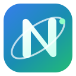

Estratégia · Tecnologia · Pessoas
O potencial da sua empresa merece mais do que soluções.Merece transformação.
Ajudamos micro, pequenas e médias empresas a diagnosticar problemas, organizar processos e transformar decisões em crescimento sustentável — combinando estratégia, tecnologia e valor humano.
Estratégia de alto nível, pensada para a realidade das PME.

NEXA360DIAGNÓSTICOESTRATÉGIAINOVAÇÃOCRESCIMENTO
Para quem foi pensada
A dimensão da empresa não limita a dimensão do seu potencial.
O nosso foco são micro, pequenas e médias empresas que precisam de transformar informação dispersa, desafios operacionais ou ambição de crescimento em prioridades claras e decisões executáveis.
Falta de clareza sobre prioridades
Processos comerciais desorganizados
Crescimento sem indicadores consistentes
Decisões de expansão por validar
Custo da inércia
Quanto custa à sua empresa adiar decisões importantes?
Processos manuais, oportunidades sem acompanhamento, retrabalho e decisões sem indicadores consomem tempo, margem e capacidade de crescimento.
O impacto varia em cada empresa. Não presumimos um valor: ajudamos a medi-lo com dados e critérios claros.
Quem somos
Empresas fortes nascem de decisões inteligentes — e de pessoas valorizadas.
A NEXA360 é um projeto empresarial em fase de preparação, desenvolvido sob a responsabilidade de Mônica Cardoso. A abertura oficial da atividade está prevista para depois de novembro de 2026.
Mais do que consultoria, a NEXA360 foi concebida para ser uma parceira de evolução. A proposta não se limita a recomendações: integra estratégias, ferramentas, processos e oportunidades para acompanhar a evolução de cada organização.
Mônica Cardoso · Responsável pelo projeto
A experiência em educação e comunicação e a formação em curso em Comércio Internacional orientam a abordagem de Mônica Cardoso: escutar, organizar informação e tornar decisões compreensíveis para quem as vai executar.
“
Acreditamos que empresas extraordinárias são construídas por pessoas valorizadas. Por isso, cuidamos das empresas sem nunca deixar de cuidar das pessoas.
NEXA360 · FILOSOFIA
Princípios NEXA360
Valores que orientam cada decisão
Selecione um valor para conhecer o compromisso que o transforma em prática.
Ética
Atuamos com transparência, confidencialidade e responsabilidade, sem promessas que não possam ser sustentadas por evidências.
Proximidade
Escutamos antes de propor. Cada solução é construída com a empresa, respeitando a sua realidade, os seus recursos e as suas pessoas.
Inovação
Aplicamos tecnologia e inteligência artificial quando acrescentam valor real, com segurança, propósito e supervisão humana.
Resultados
Transformamos análises em prioridades, planos de ação e indicadores que permitam acompanhar a evolução da empresa.
Valor humano
Colocamos as pessoas no centro da transformação, valorizando conhecimento, participação, bem-estar e desenvolvimento.
Áreas de atuação
Começamos pela clareza. Evoluímos para a execução.
O Diagnóstico Empresarial 360° é a nossa porta de entrada. A partir das prioridades identificadas, mobilizamos as competências certas em três áreas complementares.
01
Serviço de entrada
Diagnóstico e Estratégia
Compreensão integrada da empresa, definição de prioridades e plano de ação mensurável.
02
Processos, CRM e IA
Não começamos pela IA. Começamos pelo seu negócio: preservamos o que funciona e aplicamos tecnologia apenas quando resolve um problema real.
03
Crescimento e Internacionalização
Posicionamento, mercados, parceiros e decisões de expansão sustentadas por evidência.
Serviço principal
Diagnóstico Empresarial 360°
Antes de recomendar soluções, compreendemos o problema. O Diagnóstico NEXA360® distingue sintomas, causas, evidências e hipóteses para transformar complexidade em prioridades justificadas e decisões executáveis.
O que a empresa recebe
- Reunião de diagnóstico e recolha orientada de informação
- Análise integrada de estratégia, finanças, operações, comercial, pessoas, tecnologia, IA, internacionalização, sustentabilidade e riscos
- Separação entre factos, evidências parciais, hipóteses e perceções, com indicação do nível de confiança
- Matriz de prioridades por impacto, urgência, esforço, risco e capacidade de execução
- Decisão sobre ferramentas: manter, otimizar, integrar, automatizar, substituir ou descontinuar
- Mapa de riscos, oportunidades, quick wins e custo da inércia
- Plano de ação de 30–60–90 dias com responsáveis e indicadores
- O que não recomendamos, reunião executiva e próximos passos
Método NEXA360
Da compreensão à transformação.
Um percurso claro, personalizado e acompanhado — sem soluções genéricas.
Diagnosticar
Compreendemos a realidade, ouvimos as pessoas e identificamos as causas, não apenas os sintomas.
Desenhar
Criamos uma estratégia integrada, realista e alinhada com os recursos e objetivos da organização.
Implementar
Transformamos o plano em ação, com ferramentas, processos, tecnologia e acompanhamento próximo.
Evoluir
Medimos resultados, aprendemos com os dados e ajustamos continuamente o caminho.
Programa Empresas Fundadoras
Três PME. Um diagnóstico rigoroso. Uma condição de lançamento.
Selecionaremos três micro ou PME com atividade em Portugal ou com um projeto concreto de entrada, investimento ou expansão no mercado português. A condição fundadora permite validar e aperfeiçoar o método com empresas reais, sem reduzir a profundidade ou a qualidade da entrega.
Confidencialidade obrigatória. Qualquer testemunho ou caso de estudo será opcional e publicado apenas com autorização expressa.
3 vagas · sujeitas a seleção
Condição especial da edição fundadora
650 € + IVA
Valor previsto para edições posteriores: 950 € + IVA
- Micro ou PME com atividade, investimento ou projeto de expansão ligado a Portugal
- Conclusão em 15 dias úteis
- Entrega integral do Diagnóstico 360°
- Candidatura sem compromisso
Depois das três vagas: as empresas interessadas poderão integrar a lista de espera ou manifestar interesse numa edição posterior, sem qualquer compromisso.
Informação de planeamento: a abertura oficial da atividade e das candidaturas está prevista para depois de novembro de 2026. Até essa data, o programa encontra-se em preparação e recebe apenas manifestações de interesse.
Soluções e investimento
Clareza para decidir. Liberdade para escolher.
Na NEXA360, cada proposta começa pela escuta. Não vendemos pacotes prontos nem recomendamos tecnologia, processos ou estratégias antes de compreender a realidade da organização.
Diagnosticar→Priorizar→Implementar→Medir
Primeiro contacto
Conversa de enquadramento
Para compreender o desafio, verificar se a NEXA360 é adequada e indicar o próximo passo com honestidade.
- Duração
- 20–30 minutos
- Recebe
- Enquadramento inicial e orientação do próximo passo
Sem custoDisponível após a abertura oficial
Edição fundadora
Diagnóstico Empresarial 360°
Para transformar informação dispersa e desafios complexos em prioridades justificadas e decisões executáveis.
- Prazo
- Até 15 dias úteis
- Recebe
- Diagnóstico, mapa de prioridades e plano de ação de 90 dias
650 € + IVACondição para três empresas selecionadas
Após o diagnóstico
Implementação e acompanhamento
Para executar prioridades validadas sem contratar ferramentas ou intervenções que a empresa não necessita.
- Duração
- Definida pelo âmbito e pela capacidade da organização
- Recebe
- Plano de implementação, acompanhamento e indicadores
Sob propostaOrçamento transparente após definição do âmbito
Crescimento além-fronteiras
Estratégia de internacionalização
Para avaliar a preparação da empresa, selecionar mercados e estruturar decisões de entrada ou expansão internacional com critérios claros.
- Âmbito possível
- Diagnóstico de prontidão, mercados, requisitos, riscos, preparação comercial, canais e plano de entrada
- Nesta fase
- Não inclui prospeção ativa, intermediação, representação comercial ou garantia de compradores
Sob propostaMoeda, impostos, território e responsabilidades definidos por escrito
Conhecimento aplicado
Formação e workshops
Para desenvolver competências ligadas a necessidades reais da equipa, com conteúdo e duração definidos para cada organização.
- Formato
- Online, presencial ou híbrido, conforme viabilidade
- Recebe
- Programa, materiais e objetivos de aprendizagem definidos
Sob propostaCalculado por conteúdo, duração, formato e participantes
O nosso compromisso comercial
Recomendamos apenas o que fizer sentido para a realidade, os recursos e o momento da organização. Crescimento sustentável não se constrói criando dependência, mas fortalecendo a capacidade de decidir e agir.
Projetos e soluções
Construímos evidência com transparência — sem apresentar conceitos como resultados de clientes.
Demonstração tecnológica
Tecnologia & Relações
CRM NEXA360 Enterprise
Protótipo funcional público, com dados fictícios, para demonstrar gestão comercial multilingue. A versão privada segura será uma fase posterior de desenvolvimento.
Ambiente público com dados exclusivamente fictícios.Explorar demonstraçãoProjeto estratégico
Comércio Internacional
Internacionalização de PME
Modelo integrado de seleção de mercados, entrada internacional, riscos, finanças e KPIs.
Metodologia própria
Estratégia
Diagnóstico Empresarial 360°
Leitura multidimensional da empresa para transformar complexidade em prioridades claras.
Ver o método num caso fictício
* Nesta fase, apresentamos projetos próprios, metodologias e demonstrações identificados pela sua natureza. Os primeiros resultados de clientes serão publicados apenas com autorização.
Na prática
Antes de procurar mais clientes, acompanhe melhor as oportunidades.
Um exemplo do raciocínio NEXA360: compreender, diagnosticar, priorizar, implementar, medir e evoluir.
01 · A pergunta inicial
«Precisamos de mais clientes. Devemos investir em publicidade?»
Uma pequena empresa recebe pedidos por email, telefone e WhatsApp. A equipa trabalha muito, mas não tem uma visão comum das propostas em curso.
02 · Evidências do exemplo
- 40 propostas
- enviadas num mês fictício
- 15 sem próxima ação
- 37,5% das propostas sem seguimento planeado (15 ÷ 40)
- 10 sem responsável
- 25% sem responsabilidade atribuída (10 ÷ 40)
Os grupos podem sobrepor-se; as percentagens não devem ser somadas. Estes dados não demonstram vendas perdidas nem a causa de uma eventual quebra comercial.
03 · Hipótese a validar
A falta de acompanhamento pode estar a limitar o aproveitamento das oportunidades. Antes de aumentar o investimento, importa cruzar registos, ouvir a equipa e verificar os motivos de perda.
Prévia dos entregáveis
Excertos ilustrativos. O âmbito, os dados e os entregáveis finais são definidos na proposta de cada projeto.
Abrir a matriz de prioridades
| Ação | Critérios e decisão |
|---|---|
| Atribuir responsável e próxima ação às propostas | Agir agora · Impacto esperado elevado; urgência elevada; esforço baixo; risco baixo. Validar disponibilidade da equipa. |
| Uniformizar etapas e motivos de perda | Planear · Impacto esperado elevado; urgência média; esforço médio; risco de adoção. Construir com a equipa. |
| Automatizar lembretes | Desenvolver · Após validar o processo; esforço e risco dependem da ferramenta e das permissões. |
| Aumentar publicidade | Monitorizar · Decidir após analisar capacidade de resposta, qualidade das oportunidades e conversão. |
Abrir o plano de 30–60–90 dias
Até 30 dias · Organizar
Responsável proposto: coordenação comercial. Consolidar registos, definir responsáveis e medir a situação inicial.
Até 60 dias · Experimentar
Responsável proposto: equipa comercial, com apoio técnico quando necessário. Testar o processo num grupo de oportunidades e rever dificuldades semanalmente.
Até 90 dias · Avaliar
Responsável proposto: direção e coordenação comercial. Comparar indicadores, recolher feedback e decidir o que manter, ajustar ou ampliar.
Abrir os indicadores de acompanhamento
| Indicador | Como medir |
|---|---|
| Cobertura de acompanhamento | Propostas com próxima ação ÷ propostas analisadas × 100. Neste exemplo: 25 ÷ 40 = 62,5%. |
| Tempo de primeira resposta | Mediana das horas úteis entre entrada do pedido e primeira resposta. Requer datas e horários consistentes. |
| Conversão de oportunidades encerradas | Ganhas ÷ (ganhas + perdidas) × 100, no período definido. Acompanhar também oportunidades ainda abertas. Sem base inicial, não fixamos uma promessa de melhoria. |
CRM com propósito
Explore a demonstração com três perguntas: onde encontro o cliente, como acompanho os contactos e como identifico a próxima decisão comercial?
A preparação de uma versão operacional exige definir acessos por função, cópias de segurança, testes de recuperação e histórico de alterações. São requisitos a implementar e validar; não funcionalidades de segurança certificadas nesta demonstração pública.
Explorar o CRM com dados fictíciosCentro de Conhecimento
Conhecimento que não fica no papel. Torna-se decisão.
Parcerias
As melhores transformações raramente acontecem a sós.
Procuramos construir relações com empresas, especialistas, instituições, associações e investidores que partilham a nossa visão de crescimento responsável, inovação e valor humano.
Como trabalhamos com transparência
Rigor significa tornar claros o contexto, os critérios e os limites.
Reunimos aqui os princípios que orientam as estimativas, a informação empresarial e qualquer futura relação comercial.
Enquadramento claro
A NEXA360 é um projeto empresarial em preparação, com abertura oficial prevista para depois de novembro de 2026.
Estimativas verificáveis
Separamos factos, hipóteses e estimativas. Os impactos financeiros são calculados com pressupostos explícitos e dados fornecidos pela empresa.
Confidencialidade por princípio
Informação empresarial não é divulgada nem transformada em caso de estudo sem autorização expressa.
Escopo e autorização definidos
Entregáveis, prazo, responsabilidades, investimento e utilização de dados são acordados antes do início do trabalho.
Como começamos
- 01 Pedido inicial
- 02 Verificação de enquadramento
- 03 Conversa confidencial
- 04 Proposta e decisão
Perguntas frequentes
Clareza antes de começarmos.
Respostas diretas sobre a NEXA360, o Diagnóstico 360° e a forma como uma colaboração é preparada.
O que é a NEXA360?
A NEXA360 é um projeto de consultoria empresarial orientado para diagnóstico, estratégia, processos, CRM, inteligência artificial, crescimento e internacionalização, com atenção à sustentabilidade e ao valor humano.
A NEXA360 já iniciou oficialmente a atividade?
Ainda não. O projeto encontra-se em desenvolvimento e a abertura oficial está prevista para depois de novembro de 2026. Nesta fase, o website é institucional e demonstrativo.
O que inclui o Diagnóstico 360°?
Inclui recolha estruturada de informação, análise das áreas críticas, identificação de riscos e oportunidades, definição de prioridades e um plano de ação com responsáveis, prazos e indicadores. O âmbito final é confirmado por proposta escrita.
Quanto custa e quanto tempo demora?
A edição fundadora apresentada no site prevê uma condição de 650 € acrescida de IVA e entrega em 15 dias úteis, nos termos da proposta aplicável. Outros serviços, calendários e investimentos dependem do âmbito acordado com cada organização.
Como são definidos o pagamento, as alterações e o cancelamento?
Antes de qualquer trabalho começar, a NEXA360 apresenta uma proposta clara, com âmbito, entregáveis, calendário, investimento, impostos aplicáveis e forma e prazos de pagamento. Assim, a empresa sabe exatamente o que está a contratar e não encontra custos inesperados. Qualquer alteração será analisada em conjunto e só avançará depois de aceite pelas duas partes. As condições de cancelamento serão explicadas previamente; valores devidos ou devolvidos serão calculados com transparência, considerando o trabalho realizado, compromissos assumidos e despesas não recuperáveis, sem prejuízo dos direitos obrigatórios previstos na legislação aplicável.
A NEXA360 garante resultados comerciais?
Não. A NEXA360 compromete-se com método, análise e entregáveis acordados, mas resultados dependem também das decisões, recursos, execução e contexto de cada organização.
A NEXA360 pode apoiar projetos internacionais?
Sim, através de consultoria estratégica em internacionalização: diagnóstico de prontidão, análise e seleção de mercados, requisitos, riscos, preparação comercial, canais e plano de entrada. Nesta fase, o serviço não inclui prospeção ativa de compradores, intermediação, representação comercial ou garantia de parceiros e vendas. Cada projeto exige proposta própria, com país de destino, moeda, impostos, responsabilidades e regras de dados definidos.
Os dados introduzidos no formulário são guardados?
Não na versão atual. O formulário é uma demonstração: a informação não sai do navegador nem é guardada pela NEXA360. A política será atualizada antes de qualquer recolha real.
Como posso manifestar interesse ou esclarecer outra questão?
Utilize a área de contacto demonstrativa para conhecer a experiência prevista. O canal operacional e os dados comerciais completos serão publicados antes da abertura oficial.
Contacto e manifestações de interesse
Toda grande transformação começa com uma conversa.
Conte-nos o desafio, a ambição ou a ideia. A primeira reunião será um espaço de escuta, clareza e descoberta de possibilidades.
Escuta atenta · Confidencialidade · Próximos passos claros